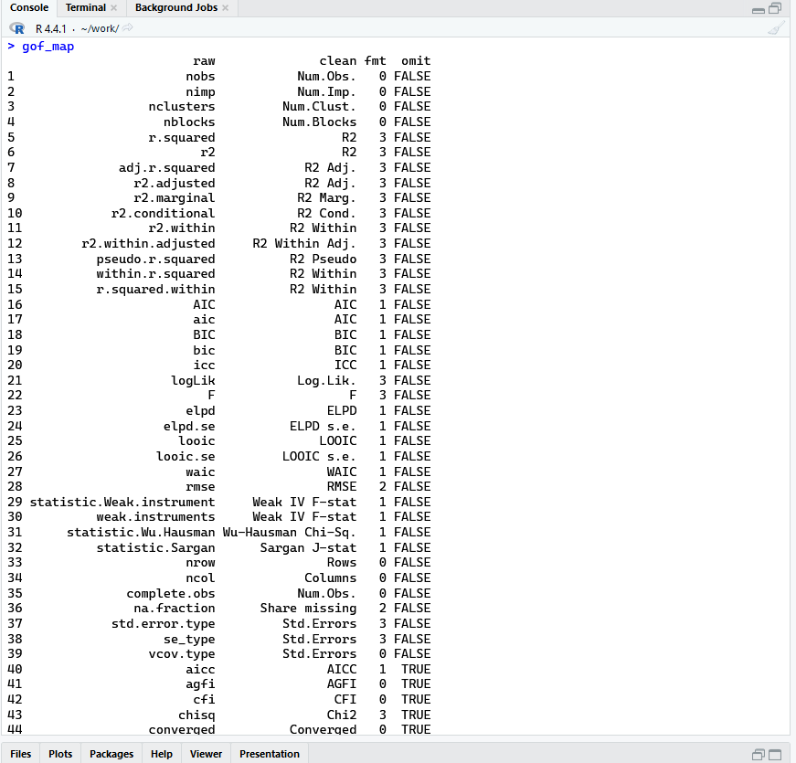
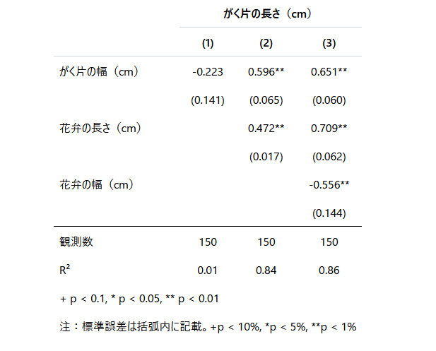
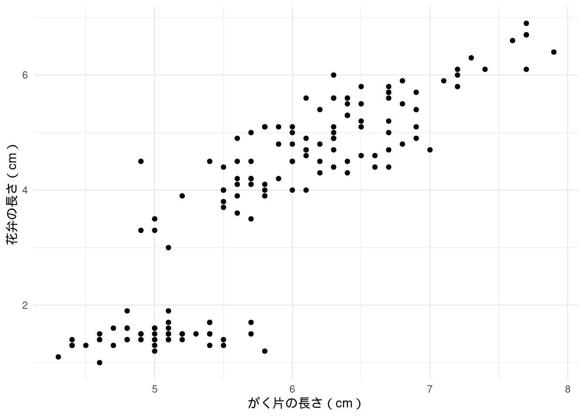

| がく片の長さ（cm） | |||
|---|---|---|---|
| (1) | (2) | (3) | |
| 注：標準誤差は括弧内に記載。+p < 10%, *p < 5%, **p < 1% | |||
| がく片の幅（cm） | -0.223 | 0.596** | 0.651** |
| (0.141) | (0.065) | (0.060) | |
| 花弁の長さ（cm） | 0.472** | 0.709** | |
| (0.017) | (0.062) | ||
| 花弁の幅（cm） | -0.556** | ||
| (0.144) | |||
| 観測数 | 150 | 150 | 150 |
| R² | 0.01 | 0.84 | 0.86 |
はじめに
これまでの記事で R Markdown や Quarto を使って \(\LaTeX\) 経由で PDF 出力する方法や、それらで使えるチャンクオプションについてご紹介してきました。
今回は、Quarto を使って論文を書く方法について包括的にまとめてみました。
ぜひ参考にしてみてください。
また、環境として RStudio を使用していると仮定します。
準備
Quarto は R Markdown の亜種、と考えてもらえればと思います。マークダウン形式で記述することができ、\(\LaTeX\) 記法を必ずしも用いる必要がないのが特徴です1。\(\LaTeX\) を深く学ばなくてもスタイリッシュな論文が書けるのではないでしょうか。
ここからは、書くのに最低限必要な使い方を紹介します。
プロジェクトの作成
必須ではありませんが推奨します。プロジェクトを作成することで、ファイルの管理がしやすくなります。
プロジェクトの作成については以下の記事で紹介しています。\(\LaTeX\) との差別化点として、分析結果をそのまま埋め込めることがあげられ、プロジェクトを作成することで、その恩恵を最大限受けられると考えています。
ファイルの作成
Quarto で論文を書くには、拡張子が .qmd のファイルを作成します。これは Quarto Markdown の略です。
RStudio 画面左上の ![]() をクリックし、「Quarto Document…」を選択します。
をクリックし、「Quarto Document…」を選択します。
以下のようにタイトルと著者名、PDF を選択し、Create をクリックします。“Use visual markdown editor” はオフにしてください2。

作成出来たら、 でファイルを任意の場所に保存します3。
でファイルを任意の場所に保存します3。
もし Quarto や R Markdown を使うのが初めての場合、上部に “Package rmarkdown required but not installed. Install Don’t show again” というメッセージが表示されるかもしれません。その場合、“Install” をクリックしてインストールしてください。
Global Options の設定
RStudio 上部のメニューから “Tools” > “Global Options…” を選択します。
その中の “Sweave” を選択し、“Typeset LaTeX into PDF using:” で “XeLaTeX” を選択します。また、その下にある “Use tinytex when compiling .tex files” にチェックを入れます。
最後に OK を押して閉じてください。
ヘッダーの記述
ファイルを作成すると、ドキュメントの上部に---で囲まれた部分があります。これを YAML ヘッダーと呼び、ここで文書の設定を行います。
以下は、基本的なYAMLヘッダーの設定です。
---
title: "【PDF】Quarto で論文を書く"
author: "阿部洋輔"
date: 2024-07-08 # todayで今日の日付にできます
date-format: "YYYY年M月D日"
format:
pdf:
documentclass: article
number-sections: true
include-in-header:
- text: |
\usepackage{zxjatype}
\usepackage[ipaex]{zxjafont}
# これらは日本語フォントの設定のために記述しています
execute:
echo: false # コードを表示しない
warning: false # 警告とメッセージを表示しない
language:
crossref-fig-title: "図"
crossref-tbl-title: "表"
crossref-eq-prefix: "式"
---分析コードや実行の際に表示されるメッセージ・警告は出力しなくてよいので false にしてあります。
また、デフォルトだと英語設定でキャプションが Table 1 や Figure 1 と表示されてしまうので、それを日本語に直すために language を追加しています。他にも自動で英語出力されてしまって困る際はこちらから該当するものを探し、下に追加していってください4。
もちろん英語論文を執筆する際に日本語設定は不要です。
date-format についてはこちらを参考にしてください。
本文の書き方（マークダウン編）
本文は Markdown で記述します。\(\LaTeX\) 記法を使うこともできますが、必ずしも使う必要はありません。もちろん、数式などは \(\LaTeX\) 記法を使うことができます。
以下のコードは、基本的な書き方の例です。
# 見出し1
## 見出し2
### 見出し3
本文です。セクションに応じて見出しをつけることができます。基本的には3段階までの見出しを使います。
- 箇条書き1
- 箇条書き2
- 箇条書き3
箇条書きを使うときは、ハイフンとスペースを入れてください。2段階目、3段階目を使用するときは、半角スペース4つを入れてください。
1. 番号付きリスト1
- 箇条書き
2. 番号付きリスト2
番号付きリストを使うときは、数字とピリオドとスペースを入れてください。
また、改行するときは空行を入れなければなりません。
文中で数式を使いたいときは、`$` で囲んでください。例えば、$y = ax + b$ のように記述します。
数式を別行で書きたいときは、`$$` で囲んでください。例えば、
$$
y = ax + b
$$ {#eq-equation-name}
のように記述します。数式にラベルをつけることもできます。`#eq-` の後にラベル名を記述します。
数式を引用するときは、`@eq-equation-name` のように記述します。以上が基本的な書き方です。
コードチャンクを使うときは、上記のように記述します。コードは YAML ヘッダーで echo: false としているので、出力されません。結果は出力されます5。
出力された PDF はこちらから確認してください。
本文の書き方（テーブル編）
Quarto で論文を書くことの醍醐味ともいえる、コードとその出力について説明します。
ここではデフォルトで使用できる iris というデータセットを利用して分析、表の出力をしてみたいと思います。
例えば以下のコードを実行すると 表 1 のように出力されます。
#| label: tbl-regression
#| tbl-cap: "iris を使用した回帰分析"
library(tidyverse)
library(fixest)
library(modelsummary)
library(tinytable)
# リスト形式で保存すると複数の分析結果を1つの表に表示可能
regression <- list(
"(1)" = iris |>
feols(Sepal.Length ~ Sepal.Width, se = "hetero"),
"(2)" = iris |>
feols(Sepal.Length ~ Sepal.Width + Petal.Length, se = "hetero"),
"(3)" = iris |>
feols(Sepal.Length ~ Sepal.Width + Petal.Length + Petal.Width, se = "hetero")
)
# ここで変数名の表記を変更
cm <- c(
"Sepal.Width" = "がく片の幅（cm）",
"Petal.Length" = "花弁の長さ（cm）",
"Petal.Width" = "花弁の幅（cm）",
"Species" = "アイリスの種類"
)
# 表に加える統計量を整理
gm <- tibble(
"raw" = c("nobs", "r.squared"),
"clean" = c("Observations", "R\u00B2"),
"fmt" = c(0, 2)
)
# フットノートを書く
fn <- "注：標準誤差は括弧内に記載。+p < 10%, *p < 5%, **p < 1%"
msummary(regression, estimate = "{estimate}{stars}",
notes = fn, coef_map = cm, gof_map = gm,
stars = c("+" = .1, "*" = .05, "**" = .01)) |>
group_tt(j = list("がく片の長さ（cm）" = 2:4))出力された PDF はこちらから確認してください。
キャッシュの設定
設定でcache: trueに設定しておくと、レンダリングするときにエラーが出ることがあるので、表出力においてcache: trueを設定するのは避けた方が良いでしょう。
以下のようなNoteがtinytableのドキュメントに記載してあります。
Note: Your document will fail to compile to PDF in Quarto if you enable caching and you use tinytable due to missing LaTeX headers. To avoid this problem, set the option #| cache: false for the chunk(s) where you use tinytable.
また、このサイトのフォント的に <- や |> と表示されていますが、それぞれ < と -、| と > になります。ご了承ください。
ここからは、表作成におけるポイントを説明します。
テーブルにおけるポイント
チャンクオプション
#|で始まっている部分です。labelはtbl-で始めることでテーブルにおけるラベルを付けられます。論文内で参照するときに必要です。@tbl-regressionという書き方で論文内で参照できます。tbl-capで表のキャプションを付けられます。
ライブラリ
tidyverse：データハンドリングのために使用します。fixest：分析のために使用します。いろいろな分析用パッケージがありますが、とりあえずこれを使えば事足りることが多いと思います。あと速い。modelsummary：分析結果を表示するために使用します。様々な分析用パッケージに対応しています。tinytable：modelsummary で作成した表をより細かく設定するために使います。
分析モデルを格納
- リスト形式で保存します。こうすることによって複数の分析結果を
modelsummaryで1つの表に起こせます。
- リスト形式で保存します。こうすることによって複数の分析結果を
coef_mapとgof_map用のcm&gmcm6 は、分析で使用した変数名を書き換えて表に出すためのものです。"Sepal.Width" = "がく片の幅（cm）"は、 “Sepal.Width” という変数名を “がく片の幅（cm）” と表示することを意味します。gmは少し複雑です。コンソールでgof_mapと打ってみると、raw, clean, fmt, omit の4列が出てきます。raw が表示する統計量、clean がそれらを表示するテキスト、fmt は小数点以下の桁数で、これらをgmで編集するということです7。“R\u00B2” はユニコード文字で、2乗を \(\TeX\) 上で表すために使用しています。
fnはフットノートを書くためのものです。ここでは標準誤差の説明をしています。

gof_map を実行するとこのように出てきます。msummary分析結果を表示するための関数です。
msummaryはmodelsummaryの関数です8。ここでは、regressionに格納した分析結果を表示しています。estimateで “{estimate}{stars}” と指定しています。これは推定値とその有意性を表示するためのものです。入れたパターンと入れないパターンで試してもらいたいのですが、有意性について別に脚注が入ってしまい、上で書いた脚注と合わせて2行になってしまうので、わざわざこの設定をしています。下の表を確認してください。notes,coef_map,gof_mapは上で設定したものを反映させています。starsは有意性の表示を設定しています。ここでは、+p < 10%, *p < 5%, **p < 1% としています。group_ttは表のグルーピングを行うためのものです。ここでは、被説明変数が全て “がく片の長さ（cm）” なので、それをグルーピングしています。1列目は変数名にあたるので、2:4 としています。group_ttの引数jは列のグルーピングで、i引数は行のグルーピングに対応しています。

estimate を指定しないとこのように脚注が2行になります。以上がテーブル作成のポイントです。
本文の書き方（フィギュア編）
次に、フィギュアの出力について説明します。
ここでも iris データセットを使用してプロットしてみます。
次のコードを実行すると、図 1 のような図が作成されます。
library(tidyverse)
p <- iris |>
ggplot(aes(x = Sepal.Length, y = Petal.Length)) +
geom_point() +
labs(x = "がく片の長さ（cm）",
y = "花弁の長さ（cm）") +
theme_minimal()
ggsave("iris_plot.pdf", p, device = cairo_pdf){#fig-iris}

出力された PDF はこちらから確認してください。
ここでもポイントを説明します。
フィギュアにおけるポイント
パイプを使用してプロット
- データセットをパイプ（
|>）でggplotに渡しています。これによって、変数が予測変換で出てくるので、作業がしやすくなります9。
- データセットをパイプ（
ggplotggplot内のaesで x 軸と y 軸を指定しています。ggplotは+で繋げていくことでプロットを作成していきます。今回は散布図を作成したいので、
geom_point()を繋げています。他にも折れ線の場合はgeom_line()などを使います。
labslabsで x 軸と y 軸のラベルを設定しています。
theme_minimaltheme_minimalは背景が白で、軸の線が薄いテーマです。他にもtheme_bw,theme_classicなどがあります。
テーマについて
theme_minimal でテーマを大方設定できますが、それに加えて細かい設定をしたいこともあると思います。その場合は、 + で theme を繋げていくことで設定できます。ここでは theme の詳細については説明しませんが、繋げる際は、theme_minimal() + theme() という順番で繋げていくことをおすすめします。
順番は逆でも構いませんが、theme() で設定したものが theme_minimal() で上書きされることがあるので、想定していたものと違う結果になることがあります。
ggsaveggsaveでプロットを保存しています。ここではiris_plot.pdfという名前で保存しています。“iris_plot.pdf” の部分は任意の名前で構いません。また、パスを指定して保存することももちろんできます。hereを使っている場合は、here("output/iris_plot.pdf")などとして保存することができます10。deviceをcairo_pdfにしています。.pngなど他の形式でも出力できますが、環境によっては文字化けなどに大変苦しめられるので11、cairo_pdfがおすすめです。僕の環境では一番安定しました。ちなみに、画像の解像度が上がるので、とりあえず一度保存するのがいいと思います。
マークダウン表記で図を出力
{#fig-iris}で図を出力しています。iris_plot.pdfの部分は保存したファイル名になります。{#fig-iris}はラベルを付けるためのものです。論文内で参照するときに必要です。@fig-irisという書き方で論文内で参照できます。
パスの指定
例えば画像を output というフォルダに保存しており、書いているコードは code フォルダにあるとします。すなわち以下のような形です。
main_directory/
├── output/
│ └── iris_plot.pdf
└── code/
└── code.qmdこの場合、{#fig-iris} としても図が表示されません。その場合は、コードファイルからの相対パスを使用しなければなりません。すなわち {#fig-iris} としてください。../ は一つ上の階層を示しています。
もちろん、既に所有している画像もマークダウン記法で出力することができます。その場合は、{#fig-label} のように記述します。キャプションは抜かせるので、{#fig-label} としても構いません。
以上がフィギュア作成のポイントです。
まとめ
Quarto を使って論文を書く方法について説明しました。
長くなってしまいましたが、現在 M2 の私自身も Quarto を使用して修士論文を書こうと思っているので、その際に必要な情報をまとめてみました。
ぜひ参考にしてみてください。
注
直接 LaTeX コードを埋め込むこともできます。↩︎
僕は使い方が分かりません。↩︎
僕は基本的に
codeフォルダを作ってそこに保存しています。↩︎本当は
lang: jaを設定するだけで万事解決のはずなのですが、パッケージのインストールでトラブるので、このような場当たり的な対処になっています。↩︎gmもそうですが、名前は何でもよいです。↩︎“nobs”, “r.squared” の2つの項目を表示し、その表記を “観測数”, “\(R^2\)” とし、小数点以下は観測数がなし、\(R^2\) は第2位までにしています。↩︎
msummaryでもmodelsummaryでも使用できます。↩︎ggplot(iris, aes(~))の形でも図は作れますが、変数名は予測変換で出てきません。↩︎僕の場合は Linux で苦労しました。↩︎